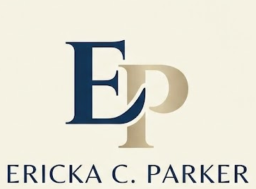
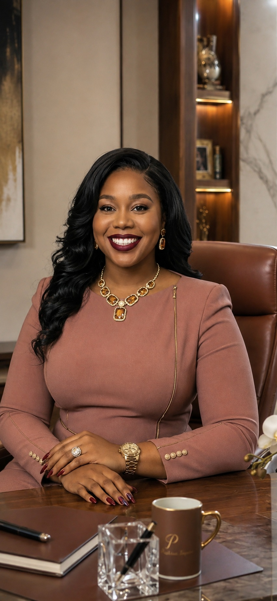

I simplify complexity.
I find the signal in the noise and turn moving parts into an actionable plan.

ERICKA C. PARKEREXECUTIVE INTEGRATOR • OPERATIONAL LEADER
I create clarity where complexity exists by connecting people, processes, and purpose—helping organizations move forward with confidence.
THE HEART BEHIND THE WORK
Early in my career, I realized I have a natural ability to step into busy, high-stakes environments, see where work is friction-heavy, and create systems that make everyone's day easier.
Behind the spreadsheets, schedules, projects, and logistics, my favorite part of any role is the relationships. I listen. I build trust. I keep communication clear. And I create the structural support people need to do their best work.
“What motivates me most is knowing that my work directly enables others to succeed.”
HOW I THINK
I find the signal in the noise and turn moving parts into an actionable plan.
I listen first, communicate clearly, and follow through consistently.
I translate metrics into insight, priorities, and practical next steps.
I document, standardize, and improve processes so progress continues.
Good operations should make it easier for people to succeed.
EXECUTIVE IMPACT
SELECTED SUCCESS STORIES
Standardized departmental travel and reimbursement workflows after procedural knowledge was lost during transitions.
Travel and reimbursement processes had become inconsistent, creating avoidable back-and-forth and uncertainty for department staff.
ActionReviewed the workflow, identified where guidance was missing, and developed clear SOPs that gave employees a consistent reference for completing requests correctly.
ResultReduced processing time and rework by clarifying expectations and creating a repeatable departmental process.
Built more realistic appointment and calendar workflows by planning around actual capacity—not simply open time on a calendar.
Scheduling had to account for breaks, complete appraisal and appointment time, events, competing priorities and realistic workload capacity.
ActionStructured calendars and appointment times around the operational requirements behind each time block, balancing coverage with the time needed to complete work properly.
ResultCreated more realistic schedules, improved coordination and reduced avoidable calendar conflicts.
Established the financial, compliance, hiring, onboarding and process infrastructure needed to run an evolving program while supporting executive leadership.
The Program Manager role required core operating processes to be established while the program itself was already moving.
ActionLearned to manage and forecast a $750K budget, interpreted grant contracts and spending limitations, supported interviewing and onboarding, and created SOPs as workflows were established.
ResultBuilt clearer financial controls, repeatable processes, documented expectations and a more consistent operating structure.
MEET ERICKA
A short introduction to the person behind the experience, the metrics, and the work.

HOW YOU'LL EXPERIENCE WORKING WITH ME
I communicate proactively.
I bring structure to fast-moving situations.
I notice problems before they become crises.
I build trust across teams.
I create systems that make work easier.
I leave processes stronger than I found them.
THE NORTH STAR
Five years from now, I hope colleagues say three things: she changed how our department operates; she became someone everyone trusted; and she made us all better.
THE NEXT CHAPTER
I’m energized by opportunities to connect people, processes and technology—especially in Integrations, Program Management and operational leadership.